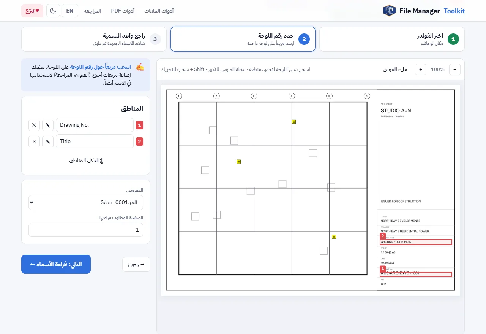
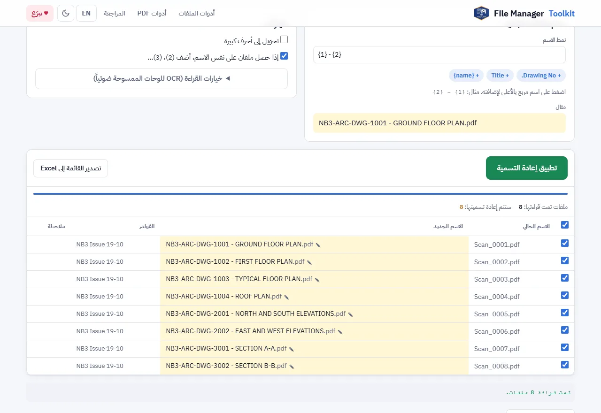

طريقة إعادة تسمية ملفات PDF للوحات من جدول العنوان (Title Block)
حوّل أسماء ملفات مثل Scan_0001.pdf إلى أسماء مثل NB3-ARC-DWG-1001 - GROUND FLOOR PLAN.pdf لمجلد كامل من اللوحات مرة واحدة، باستخدام رقم اللوحة وعنوانها المكتوبين في جدول العنوان لكل لوحة.
ملفاتك بتفضل على جهازك. مفيش أي حاجة بتترفع.
الإجابة باختصار
افتح أداة التسمية من الـ Title Block، واختر المجلد الذي فيه لوحات PDF، وارسم مربعاً حول رقم اللوحة على لوحة واحدة، ثم راجع الأسماء الجديدة واضغط "تطبيق إعادة التسمية". الأداة تقرأ نفس المربع في كل ملف PDF وتسمّي كل ملف بما تجده فيه.
لماذا تأخذ إعادة تسمية اللوحات يدوياً وقتاً طويلاً
ملفات الطباعة والملفات الممسوحة ضوئياً والملفات القادمة من الاستشاري نادراً ما تصل بأسماء مفيدة. مجلد الإصدار المعتاد مليء بأسماء مثل Scan_0001.pdf أو Layout1.pdf أو A3 print (2).pdf، بينما رقم اللوحة وعنوانها الحقيقيان مكتوبان فقط داخل جدول العنوان.
إعادة تسميتها يدوياً تعني فتح كل ملف PDF، وقراءة الرقم، وكتابته، والتأكد أنك لم تبدّل بين لوحتين. مع 50 أو 300 لوحة يصبح هذا يوم عمل كاملاً، ومكاناً سهلاً لخطأ يصل إلى خطاب الإرسال. جدول العنوان فيه الاسم الصحيح بالفعل، فالأسرع أن تترك الكمبيوتر يقرأه.
خطوة بخطوة
اختر الفولدر الذي يحتوي على لوحاتك
افتح الأداة واضغط "اختر فولدر". اختر المجلد الذي فيه لوحات PDF. فعّل "تضمين الفولدرات الفرعية" إذا كانت اللوحات موزعة على مجلدات حسب التخصص.
ارسم مربعاً حول رقم اللوحة
تظهر أول لوحة على الشاشة. اسحب مربعاً حول رقم اللوحة في جدول العنوان. ارسم مربعاً ثانياً حول عنوان اللوحة، وثالثاً حول رقم المراجعة إذا أردت إضافتهما إلى الاسم.
اكتب نمط الاسم
كل مربع يأخذ رقماً. النمط {1} - {2} يعطي رقم اللوحة ثم شرطة ثم العنوان. اضغط على الأزرار الصغيرة تحت النمط لإضافة مربع، أو {name} للاحتفاظ بالاسم القديم داخل الاسم الجديد.
راجع الأسماء الجديدة
تقرأ الأداة المربعات في كل ملف PDF وتعرض الاسم الحالي بجانب الاسم الجديد. اضغط على أي اسم جديد لتصحيحه. الملفات التي ستأخذ نفس الاسم يضاف لها (2) و (3)، فلا يُستبدل أي ملف.
طبّق إعادة التسمية
اضغط "تطبيق إعادة التسمية". في Chrome أو Edge تتغير أسماء الملفات داخل مجلدك مباشرة. وإذا ظهر خطأ، اضغط "تراجع عن آخر تسمية". في المتصفحات الأخرى تحصل على ملف ZIP فيه النسخ بالأسماء الجديدة.


أنماط أسماء مفيدة
- {1} يعطي رقم اللوحة فقط، مثل NB3-ARC-DWG-1001.pdf.
- {1} - {2} يعطي الرقم والعنوان، وهو الشكل الأشهر لملفات الإصدار.
- {1}_{3} يضيف رقم المراجعة، مثل NB3-ARC-DWG-1001_C02.pdf، ومفيد عندما تحتفظ بأكثر من مراجعة في نفس المجلد.
- فعّل "تحويل إلى أحرف كبيرة" إذا كان نظام مكتبك يكتب أسماء الملفات بحروف كبيرة.
الرموز التي لا يسمح بها Windows في أسماء الملفات، مثل / أو :، تُستبدل بشرطة تلقائياً، فعنوان مثل "PLAN / SECTION" لا يوقف إعادة التسمية.
اللوحات الممسوحة ضوئياً وجداول العنوان بالعربي
أغلب ملفات PDF المطبوعة من AutoCAD أو Revit فيها نص حقيقي يُقرأ بدقة. وإذا كانت اللوحة ممسوحة ضوئياً أو النص مفكوكاً إلى خطوط، تستخدم الأداة OCR على المربع. افتح خيارات القراءة لاختيار الإنجليزية أو العربية أو الاثنين، واختر "أكواد فقط" عندما يكون المربع فيه رقم لوحة، حتى لا يختلط حرف O مع الرقم 0.
قبل إرسال الإصدار
اضغط "تصدير القائمة إلى Excel" لتحتفظ بسجل للأسماء القديمة والجديدة. وبعد التسمية، يقارن "فحص قبل التسليم" أسماء الملفات بجداول العنوان وبقائمة اللوحات في Excel، فتكتشف الأرقام المكررة أو اللوحات الناقصة قبل إرسال الخطاب.
سمِّ لوحاتك الآن
مجاني، يعمل داخل متصفحك، ولوحاتك لا تخرج من جهازك أبداً.
افتح أداة التسمية من الـ Title Block ←أسئلة شائعة
هل يمكن إعادة تسمية ملفات PDF حسب محتواها مجاناً؟
نعم. أداة التسمية من الـ Title Block مجانية وبدون حد لعدد الملفات. تقرأ النص داخل مربع ترسمه على اللوحة وتستخدمه كاسم للملف.
هل تُرفع لوحاتي على سيرفر؟
لا. متصفحك هو الذي يفتح ملفات PDF على جهازك. لا يُرسل أي شيء لأي سيرفر، ولذلك هي آمنة للوحات العملاء والمناقصات.
ماذا لو كان جدول العنوان في مكان مختلف في بعض اللوحات؟
شغّل الأداة مرة لكل شكل من جدول العنوان، مثلاً مرة للوحات A1 ومرة للوحات A3. ويمكنك أيضاً تصحيح أي اسم بالضغط عليه قبل التطبيق.
هل تعمل مع اللوحات الممسوحة ضوئياً؟
نعم. إذا لم يكن في المربع نص حقيقي، يقرأه OCR بالإنجليزية أو العربية أو الاثنين. استخدم دقة OCR أعلى للنص الصغير.
هل يمكن التراجع عن إعادة التسمية؟
نعم. في Chrome و Edge يعيد زر "تراجع عن آخر تسمية" الأسماء القديمة. ويمكنك أيضاً تصدير قائمة الأسماء القديمة والجديدة إلى Excel.